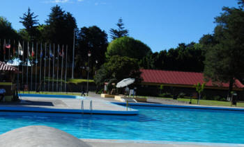
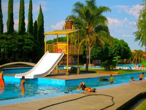
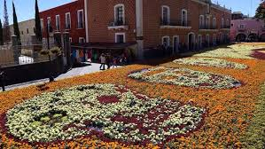
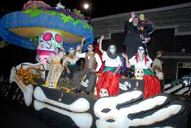
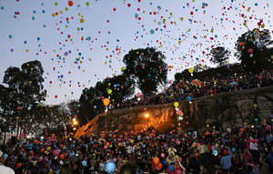
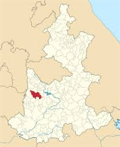

la localidad de San Pedro Atlixco está situado en el Municipio de Tianguismanalco (en el Estado de Puebla). Hay 1102 habitantes. San Pedro Atlixco está a 2180 metros de altitud. En la localidad hay 509 hombres y 593 mujeres. La relación mujeres/hombres es de 1,165. El ratio de fecundidad de la población femenina es de 3.10 hijos por mujer. El porcentaje de analfabetismo entre los adultos es del 5,54% (2,95% en los hombres y 7,76% en las mujeres) y el grado de escolaridad es de 6.01 (6.49 en hombres y 5.67 en mujeres). En San Pedro Atlixco el 6,9% de los adultos habla alguna lengua indígena. En la localidad se encuentran 224 viviendas, de las cuales el 0,18% disponen de una computadora. en San Pedro Atlixco se encuentra una hermosa cascada, es un lugar turistico ya que por la gran cantidad de agua que hay es muy refrescante y venden una gran variedad de comida tipica.Hay paseos a caballo, hay renta de juegos y entre otras cosas mas.
Disfruta de albercas climatizadas con toboganes, playa artificial, playero, cancha de voleibol y deportivas, acueducto, vestidores y varias atracciones para que tu visita sea inolvidable. Además podrás disfrutar de varios restaurantes de comida rápida. Alberca techada y climatizada para uso exclusivo de huéspedes, con una profundidad de 1.45 a 1.75 metros cuenta con todo esto: Albercas exteriores climatizadas con una profundidad de 1.28 metros Zona de Balneario Zona de Campamento Lago de Pesca Deportiva Cine Audiorama Museo Obrero Industrial ( Visitas guiadas ) Helipuerto Chapoteaderos Canchas de Tenis-Basquet-Volleyball Cancha de duela multiusos Renta de cuadriciclos y bicicletas Cabañas de antojitos Tiendas de Artesanías y Souvenirs Minisuper-Salón de juegos Servicio de Fotografía Profesional Ecoturismo Cultural (Tours) Estacionamiento Servicio de Enfermería Vigilancia las 24 Horas

Inicio > Puebla > Balneario Axocopan Puebla Balneario Axocopan Puebla Edy octubre 15, 2013 Puebla No hay comentarios Balneario Axocopan Puebla El Balneario Axocopan se encuentra ubicado a tan solo 31 kilómetros de la ciudad de Puebla, y a poco menos de 10 minutos del municipio de Atlixco, específicamente en Niños Héroes s/n Colonia Axocopan. Este hermoso balneario es muy famoso ya que sus aguas provienen de los deshielos del Volcán Popocatépetl, razón por la cual son frías pero dado el calor de la región se puede nadar y divertirse sin ningún problema. El Balneario de Axocopan cuenta con estacionamiento, área de vestidores, albercas, juegos infantiles, y todos los servicios necesarios para divertirte sin tener que preocuparte de nada. Para llegar desde la ciudad de Puebla se puede tomar la Carretera Federal a Atlixco, o bien la Vía Atlixcáyotl, una vez en Atlixco cualquier persona te podrá indicar con toda exactitud que ruta tomar. El Balneario se encuentra abierto de 8 de la mañana a 6 de la tarde. ¿Listo para divertirte? ¡Te esperamos con los brazos abiertos!

Es el nombre de un festival cultural que se realiza en el cerro de San Miguel, en la parte conocida como Netotiloyan(Cerro de la danza), en el municipio de Atlixco, Puebla el último domingo de septiembre de cada año. El nombre de este festejo que se celebra en torno a la fiesta de San Miguel Arcángel es de origen náhuatl y quiere decir Gran Fiesta de Atlixco. Pero traducido por las raíces de la lengua náhuatl el sufijo "Yotl" más Atlixco se traduce como "Atlixquedad". El Huey Atlixcáyotl congrega las delegaciones de las once regiones etnogeográficas del estado de Puebla. El primer Huey Atlixcayotl se celebró en 1965. Se supone que se trata de una festividad en honor del dios Quetzalcóatl, que se identifica con el culto al santo patrón del Valle de Atlixco. En 1996 fue declarado Patrimonio Cultural del Estado de Puebla por el gobierno estatal. Su rescate fue obra del etnólogo estadounidense "Cayuqui" (Raymond Harvy Estage Noel) en 1965, junto con un grupo de representantes de Atlixco. Entre otras cosas, en el Huey Atlixcáyotl se elige a la Xochicíhuatl (Mujer Flor) y a sus Xochipilme (Florecitas), que presiden las celebraciones. No se trata de un concurso de belleza, sino de una elección que se realiza sobre el conocimiento demostrado de las costumbres de los pueblos del estado. Cada región envía una representante para la elección de la Xochicíhuatl. donde las personas van a ser cualquier cosa como celebrar o resar.
Con las fiestas de día de muertos se espera alrededor de 200 mil visitantes, mismos que disfrutarán del Tapete Monumental, Desfile de Calaveras y demás actividades que el Ayuntamiento tiene preparadas. Autoridades municipales e invitados especiales inauguraron el Tapete Monumental de Día de Muertos, que sumadas a las demás actividades esperan cumplir con el objetivo principal: reactivar la economía en el municipio, con la visita de más de doscientos mil visitantes. El tapete está formado por 59 100 plantas entre las que destacan: cempazúchitl, cenesio, amaranto y coleo divididas en 19700 macetas; este tapete floral es también un homenaje a todos los productores de flor, que hacen del municipio el principal productor de flor de muerto de todo el país. Con este tipo de ejercicios se pretende cumplir con las expectativas de todos los visitantes.

Tradicional Desfile de Calaveras que se realizará el 2 de noviembre y en el cual cientos de personas disfrazadas acorde a la tradición buscan preservar la costumbre mexicana. Para este año como un atractivo más durante estas festividades, se encuentra la Muestra de Catrinas de más de 2 metros de altura por principales calles, mismas que se realizaron por jóvenes artistas Atlixquenses y que se expondrán del 25 de octubre al 2 de noviembre.

Atlixco, nuevamente estará llena de la luz. Te esperan noches llenas de color que harán que pases una grata estancia, caminando por sus calles que te deslumbrarán a cada paso. La “Villa Iluminada” es un recorrido que resalta la belleza arquitectónica de esta ciudad, embelleciéndola con luz. Durante más de cuarenta días las calles formarán un circuito de luz y color, vestidas de figuras y escenas alusivas a la navidad, las tradiciones y la identidad de la ciudad. Los edificios antiguos serán engalanados con luces, lo que destacará su bella arquitectura y valor histórico. Además, no te pierdas actividades: Artísticas Culturales Deportivas Stands de Flores Artesanías Artículos navideños y de temporada Gastronomía típica El recorrido del espectáculo iniciará en la Calle Hidalgo, bajando hacia el zócalo de Atlixco, pasa por el callejón Constitución y sigue por la calle 4 norte, frente al exconvento de El Carmen, llegará a calle Nicolás Bravo, después al boulevard Ferrocarriles y finalizará en el Parque Revolución.
Las Fiestas de Reyes es una actividad que nació en Atlixco para el país. Su meta cumplida es que ninguno de los 40 mil niños de escasos recursos que tenemos en el municipio se quede sin recibir un juguete. Las Fiestas de Reyes de Atlixco fueron consideradas por el Fondo de las Naciones Unidas para la Infancia, la UNICEF, y el DIF Nacional como uno de los 17 mejores proyectos de la república mexicana que destacan la respuesta a una amplia convocatoria a voluntarios, pues en los trabajos participan más de mil ciudadanos, servidores públicos y empresarios incluso del extranjero. Dentro de las Fiestas de Reyes, el Festival de la Ilusión tiene el objetivo de despertar en los niños la imaginación y hacer que ellos inviten a los Reyes Magos a visitar Atlixco. Este festival lleno de magia, música, colorido y fuegos piroctécnicos se realiza en la Plazuela de la Danza del Cerro de San Miguel, donde llegado el momento los pequeñitos lanzan sus globos al cielo con las cartas que dirigen a los Reyes Magos. El Festival de la ilusión logra reunir a más de 5 mil asistentes, entre papás y niños, con lo que se convierte en un gran festival. Voluntarios y empresas preparan con anticipación la llegada de los Reyes quienes recorren las principales calles de la ciudad acompañados de payasos, personajes animados y carros alegóricos perfectamente iluminados que aluden a temas infantiles.

Tambien cuenta con la presencia de de diferentes expositores de insumos y productos relacionados con la industria floral. Esta expo se realiza a principios del mes de Julio.Tambien destaca la Feria de la Noche Buena en en su tercera emisión se logró una producción de un millón 600 mil plantas. La Expo Flores y Plantas cuenta con un espacio de 2 mil 500 metros cuadrados para más de 150 expositores de la localidad y del interior de la república. Son muchas las razones por las que Atlixco es la flor más bella de Puebla y de México, y estas son algunas de ellas: Somos uno de los municipios uno de los municipios que produce una mayor cantidad de rosales Somos el primer lugar en cuanto a la producción de flores en maceta Nos convertimos en el principal productor de flor de Nochebuena durante el 2003 y 2004 al obtener 1 millón 200 mil flores En Semana Santa creamos el mercado de flores más grande del estado alcanzándose una venta de 2.5 millones de maletas de flor de temporada y de otras variedades Considerado como uno de los bancos de germoplasma de especies mexicanas de orquídeas más grande de México, el rancho La Joya alcanza un nivel anual de producción de 5 mil plantas que se exportan a países como Suiza, Alemania, Dinamarca e Inglaterra. La Joya posee un inventario de 200 mil plantas y cerca de 500 diferentes especies mexicanas de orquídeas, y tiene un laboratorio de cultivo de tejidos en el que se reproducen orquídeas híbridos y especies mexicanas algunas de ellas en peligro de extinción.
Se localiza a 25 kilómetros de la ciudad de Puebla, capital de la entidad homónima y tiene dos relevantes vías de ingreso, la carretera federal 190 y la más actual Autopista Vía Atlixcáyotl. En la actualidad, es una dinámica ciudad con una población superior a los cien mil habitantes, los cuales han conseguido combinar un notable crecimiento urbano con una vasta herencia de arquitectura novohispana, creada por los fundadores del lugar. Actualmente estos edificios históricos integran uno de los atractivos más importantes de este Pueblo Mágico. Un paseo por el zócalo de Atlixco es una vivencia magnífica, ya que los visitantes pueden degustar deliciosos helados o bien ricos platillos en alguno de los muchos restaurantes que allí se ubican. Es aconsejable saborear la cecina de Atlixco, el consomé, o truchas preparadas en las versiones más variadas. No lejos del zócalo de este Pueblo Mágico se encuentra el Mercado, donde se expenden numerosos productos, como tortillas preparadas a mano y chapulines fritos preparados con limón y sal. Es admirable como Atlixco de las Flores preserva sus costumbres y tradiciones. Año con año en el mes de septiembre, el municipio exhibe lo más típico de su producción por medio de su feria regional, sus variadas danzas, la hermosura de sus flores, su multifacética gastronomía y todo lo que este municipio y esta entidad tienen para ofrecer a los visitantes nacionales y extranjeros. Ornamenta el panorama el volcán Popocatépetl, mismo que ha visto florecer y declinar diferentes culturas de la región y que sirve como referente de sus límites geográficos. Una acertada recomendación es subir a la cima del Cerro de San Miguel, para contemplar Atlixco desde los miradores y para quienes aún tengan fuerzas suficientes, ascender por una escalinata hasta la ermita del Arcángel San Miguel. Cuando se emprenda el descenso no hay que perderse el Ex Convento Franciscano y la iglesia parecida a un fuerte, única en la entidad, que allí se encuentra. Desde este lugar se pueden observar notables paisajes. Dos propuestas de recorridos muy interesantes en Atlixco son las siguientes. La primera va de Viveros de Cabrera al Cerro de San Miguel pasando por el callejón Chicomecoatl, la calle Circunvalación Xochiquetzal y la explanada del cerro donde se realiza la festividad más importante de la comunidad: el "El HueyAtlixcáyotl”. El otro recorrido a considerar comienza en el zócalo de la ciudad y termina en el Cerro de San Miguel. En este caso el paseo lleva a los visitantes por la Avenida Miguel Hidalgo, la antigua Iglesia de la Tercer Orden, pasando por la calzada 16 de septiembre, la Plazuela Fray Toribio de Benavente y el Convento e Iglesia de San Francisco hasta arribar a la explanada del cerro. MUY RECOMENDABLE 1 Participar en la gran fiesta del Huey Atlixcayotl, con danzas tradicionales de toda Puebla, como los quetzales o los hombres pájaro. 2 Admirar las extraordinarias alfombras florales que cubren el Zócalo durante el Día de Muertos. 3 Escaparse con la familia a uno de los conocidos balnearios de la zona. 4 Pasear por el centro y conocer sus grandes ex-conventos, como del Carmen o San Francisco, y probar la famosa cecina de Atlixco. 5 Obviamente, comprar flores y plantas.
Cómo Llegar a Atlixco Pueblo Magico Puebla El municipio colinda al norte con el municipio de Tanguismanalco, al noreste con los municipios de Santa Isabel Cholula y Ocoyucan, al suroeste con el municipio de Atzitzihuacan, al sur con los municipios de Huaquechula y Tepeojuma, sureste con el municipios de San Diego la Meza Tochimiltzingo, al este con la Ciudad de Puebla, y al oeste con el municipio de Tochimilco. Se ubica a 25 km de la ciudad de Puebla, capital del Estado y cuenta con dos importantes vías de acceso: la Carretera Federal 190 y la moderna Autopista Vía Atlixcáyotl. No hay autobuses directos, así que lo que tendrías que hacer seria ir a la TAPO (puedes llegar por metro, creo que es metro san Lázaro) o a la central del norte (también hay metro), el costo del boleto es de 98 pesos el mas barato en la TApo, en la central del norte son 120 pesos creo. Mas o menos son 2 horas de viaje de terminal a terminal. Ya en Puebla, no te bajes hasta llegar a la Capu, ve a donde venden los boletos (tienes que subir las escaleras cruzar el puente peatonal y llegar al área de venta de boletos) , hay tres lineas, ORO, ERCO y LAMSA, los costos varían de 20 a 17 pesos, la linea Oro expende los boletos del lado izquierdo, bajando del puente peatonal que cruza el patio de autobuses, Para Erco y LAMSA, tienes que salir, pasando el puente peatonal, por un pasillo a tu derecha, hay una tienda de recuerdos de talavera y unos boledores de calzado en este pasillo, hay un patio, casi saliendo del pasillo podrás ver enfrente donde están saliendo los ERCO y a tu derecha están los LAMSA. Yo te recomendaría el oro son 2 pesos mas pero son mas cómodos, mas o menos son una hora de la terminal a la terminal.

Centro de Bachillerato Tecnológico Industrial y De Servicios no.16
NOMBRE:Mayra Rojas Domínguez
NOMBRE DEL MAESTRO:José Antonio Gómez Hernández
SUBMODULO:Desarrolla Aplicaciones Móviles
4°semestre Grupo:"G"